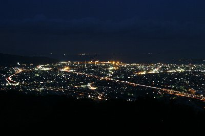
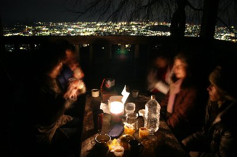
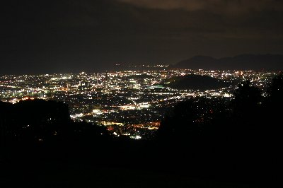

撮影＆コーヒー集会 | 2008年1月 |
|---|---|
| 年末に友人と行った夕焼け撮影に味を占めて、今度は夜景写真を撮ろう！ ついでにコーヒー集会をやろう！って事で、プチ企画を挙げましたところ、沢山の方に参加して頂き、嬉しい限りです。 その模様を、ちょこっとお伝えします。 土曜の夕方、うまくいけば富士山の夕焼けを撮ろうと思い、16時に現地の公園に集合〜！ 日が沈むのには未だ早いけど、お湯でも沸かしながら待とうって事で、始めは4人のスタートでした。 | |
|  清水方面を眺めています。分からないよね。 |  夜景を見ながらコーヒータイム |
| この場所は夜景のスポットらしく、夜になるとカップルで賑わう様です。 しふとべる内部でも以前活用した人が居るようですが・・・ 標高がちょっと有り、東から富士山、清水の港、日本平、西に向かって東静岡、静岡市中心部と、かなりの広範囲で見渡すことが出来るベストポジションだと思います。 沸かしたお湯でコーヒーを入れ夕闇を待っていると、富士山方面に雲が出てきて残念ながら富士山を覆い隠してしまいました。 天気ばかりはしょうがないですが、気を取り直して夜景に専念しましょう。 メンバーも集まりだして、コーヒーやお菓子を頂きながら、ここだー！と思うところでシャッターをバシャバシャ切り、下手な鉄砲数打ちゃ当たる攻撃で、やっつけていました。 最終的に7人が参加して頂き、プチイベントとしては大成功と言えるでしょう。言えるよね？ | |
|  同じく。長時間露出のため、人物はブレています。 |  静岡市葵区方面 |
| サクラくちゃんのフィルムが空回り状態で、撮れていなかったりとハプニングも有りましたが、きっかーのプリン差し入れや、いづみさんのコーヒー、豆などが美味しくいただけたことが良かったです。 さて、写真の出来ですが、まあ、見ていただいてと言う事で。 自分としては、イマイチ。 リベンジします〜。 今度はデジカメじゃ無く、フィルムでやろうかな。 | |
| 写真＆コメント：べっしー | |